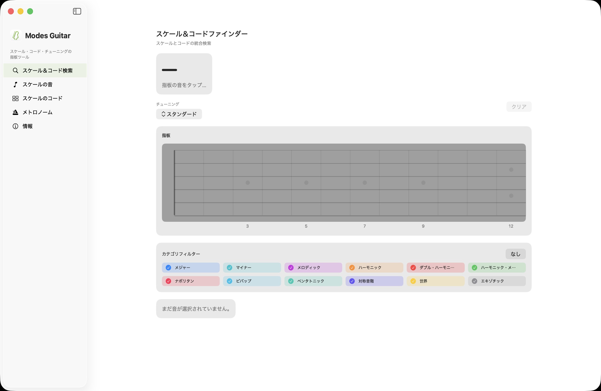
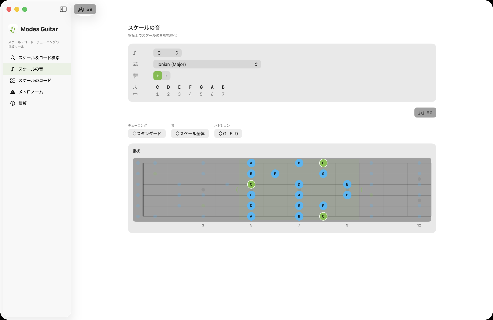
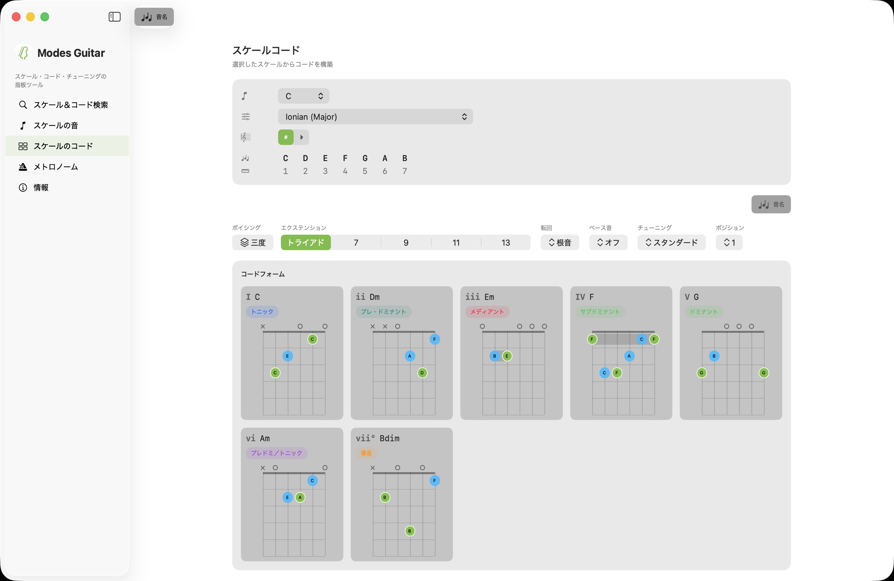
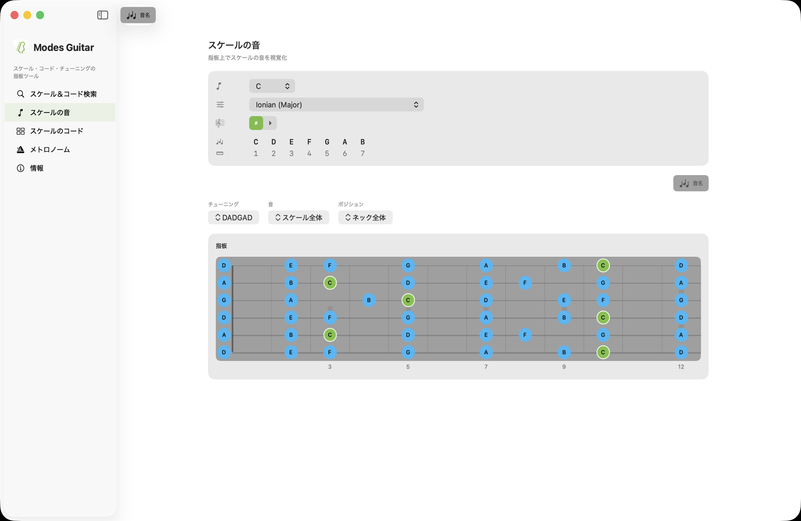
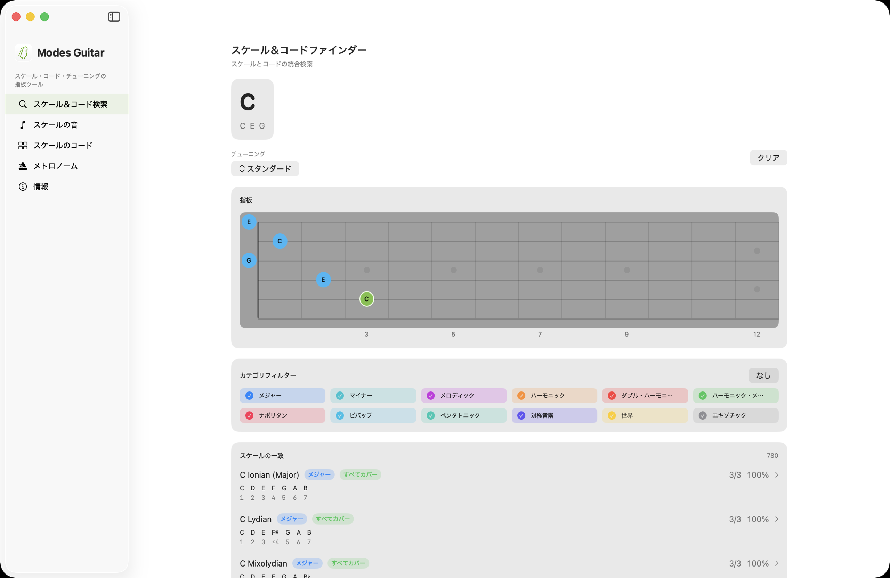
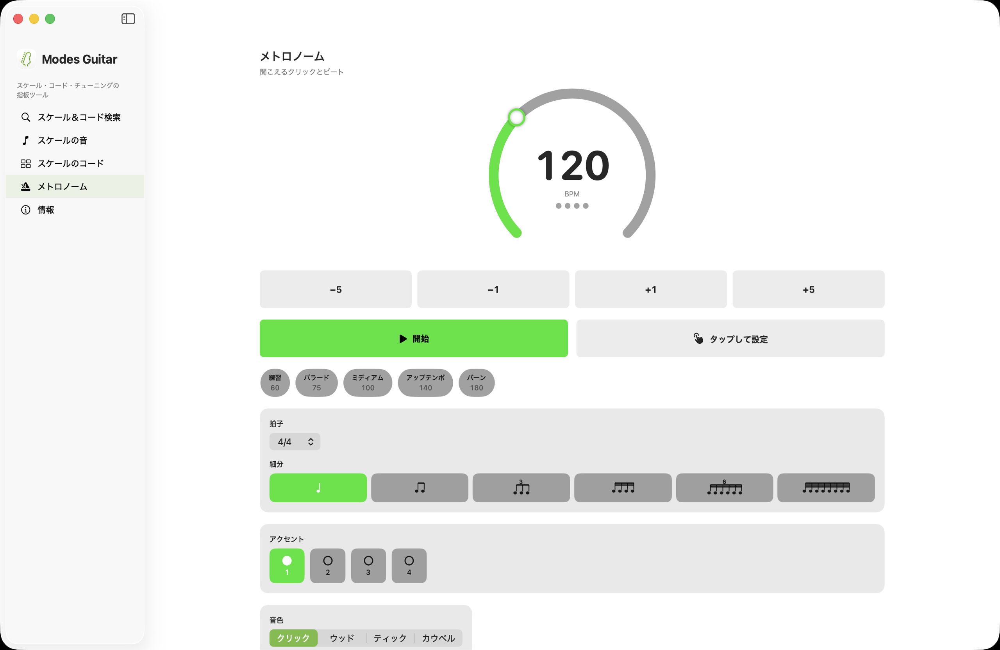
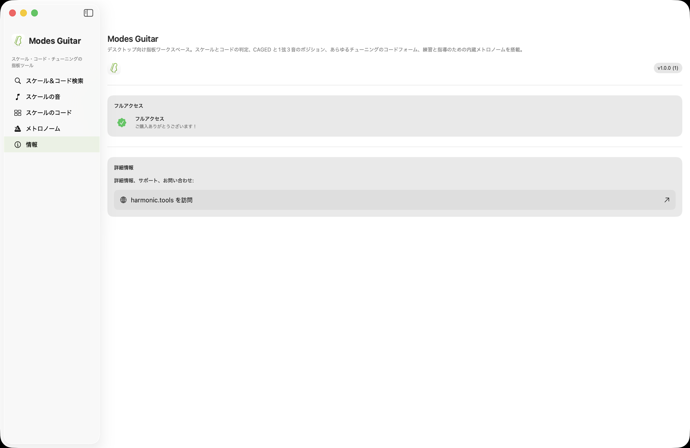

macOS用Modes Guitar
Mac用フレットボードワークスペース。押さえている音をタップして演奏内容を確認し、あらゆるスケールをCAGEDまたは3ノート・パー・ストリングのポジションで展開、あらゆるチューニングで演奏可能なコードフォームを閲覧、そのすべてを内蔵メトロノームで練習 DAWやレッスンプランの横にすっきり収まるサイドバーアプリで。
- ネック上で直接スケール＆コード検索
- CAGED＆3ノート・パー・ストリングのポジション
- あらゆるチューニングで演奏可能なコードフォーム
- 20種類のチューニング＋自分だけのカスタムチューニング
- 練習用メトロノーム＆通知センターウィジェット
スクリーンショット
ウェブサイトのデザインに合わせたライトモードとダークモードのスクリーンショットを収録。








機能
- スケール＆コード検索：押さえている音をネック上で直接タップしてください。Modes Guitarはコードをリアルタイムで識別します メジャー、マイナー、ディミニッシュ、オーギュメント、拡張、サスペンデッドなど そして適合するすべてのスケールを音のカバレッジ順にランク付けします。スケールファミリーでフィルタリングしてリストを絞り込み、そのままそのスケールのコードへジャンプできます。
- フレットボード上のスケール：ルートとスケールを選ぶと、すべてのスケール音がネック全体に浮かび上がります。CAGEDポジションや3ノート・パー・ストリングのランに切り替え、ネック上でボックスを上下にドラッグしてポジションを変更、音をトライアド、セブンス、ペンタトニック、フルスケールに絞り込んで、フォームの奥にあるフォームを確認できます。
- コードフォーム：スケールの各音階度に、実際に演奏可能なコードフォームが用意されています。開放弦・ミュート弦のマーカー、バレー表示、フォームがネックの高い位置にある場合のフレット番号ガターも完備。ネックに沿ってポジションを切り替え、転回形を選択、または任意のスケール音をベースに配置してスラッシュコードを作成できます。
- 20種類のチューニング＋自分だけのチューニング：スタンダード、ドロップD、ドロップC、E♭スタンダード、DADGAD、オープンG、オープンD、7弦、バリトン、4弦・5弦ベース、ウクレレ、バンジョー（5弦、テナー、プレクトラム）、マンドリン。フォーム、コードフォーム、音名は選んだチューニングに合わせて再計算され、リチューニングしても運指は保たれるので、同じフォームがどう変化するかを聴けます。あるいは自分だけのチューニングを構築 3〜8弦を選び、任意のプリセットを起点に一本ずつ耳で調弦できます。
- 練習用メトロノーム：本格的なメトロノームも一緒に：拍子、分割、スウィング、拍ごとのアクセント、4種類のクリック音、音量調整とハプティクス、さらにクイックテンポと、練習中のパッセージ用の保存プリセット。
- ウィジェット：メトロノームを通知センターに常駐させ、アプリを切り替えずに開始・停止でき、さらに毎日新しい今日のスケールと今日のコードで練習できます。
ギタリストのための設計
- 完全にデバイス上で動作 アカウント、広告、トラッキングなし
- インターネット接続不要
- 全体を通してライトモードとダークモードに対応
- DAWやレッスンプランの横に置けるサイドバーアプリ
- 11言語にローカライズ
モードを学ぶギタリスト、新しいチューニングをマッピングするベーシスト、練習課題を作る講師、次のコードを探すソングライター 誰にとってもModes Guitarはフレットボード全体をMacにお届けします。7日間無料でお試しください 試用期間後は一度きりの購入でフルアクセスがアンロックされます。サブスクリプションはありません。
フレットボード＆チューニングリファレンス
アプリの背後にあるチューニング、ポジション、コードツール、メトロノーム機能の完全なリファレンス。
チューニング
フォーム、コードフォーム、音名は選んだチューニングに合わせて再計算されます。リチューニングしても運指は保たれるので、同じフォームがどう変化するかを聴けます。音は低音弦から高音弦の順に記載しています。
| チューニング | 音（低音 → 高音） | 弦数 |
|---|---|---|
| Standard | E A D G B E | 6 |
| Drop D | D A D G B E | 6 |
| Drop C | C G C F A D | 6 |
| E♭ Standard | E♭ A♭ D♭ G♭ B♭ E♭ | 6 |
| DADGAD | D A D G A D | 6 |
| Open G | D G D G B D | 6 |
| Open D | D A D F♯ A D | 6 |
| Seven-String | B E A D G B E | 7 |
| Baritone | B E A D F♯ B | 6 |
| Bass (4-String) | E A D G | 4 |
| Bass (5-String) | B E A D G | 5 |
| Ukulele | G C E A | 4 |
| Banjo (5-String) | G D G B D | 5 |
| Banjo (Tenor) | C G D A | 4 |
| Banjo (Plectrum) | C G B D | 4 |
| Mandolin | G D A E | 4 |
自分だけのチューニングも構築できます 3〜8弦を選び、任意のプリセットを起点に一本ずつ耳で調弦しましょう。
フレットボードポジション
あらゆるスケールをネック全体に展開し、表示する範囲を変更できます。ネック上でボックスを上下にドラッグしてポジションを移動。
ポジションシステム
音のサブセット
コードフォーム
現在のチューニングで、スケールの各音階度に実際に演奏可能なコードフォームが用意されています。
- Playable grips — open- and muted-string markers, barre indicators, and a fret-number gutter when the shape sits up the neck.
- Positions — step through the shapes along the neck.
- Inversions — choose which chord tone sits in the bass.
- Slash chords — force any scale tone into the bass.
練習用メトロノーム
練習中のパッセージのための本格的なメトロノーム。
ウィジェット
アプリを切り替えずに、メトロノームと毎日の理論にアクセス。